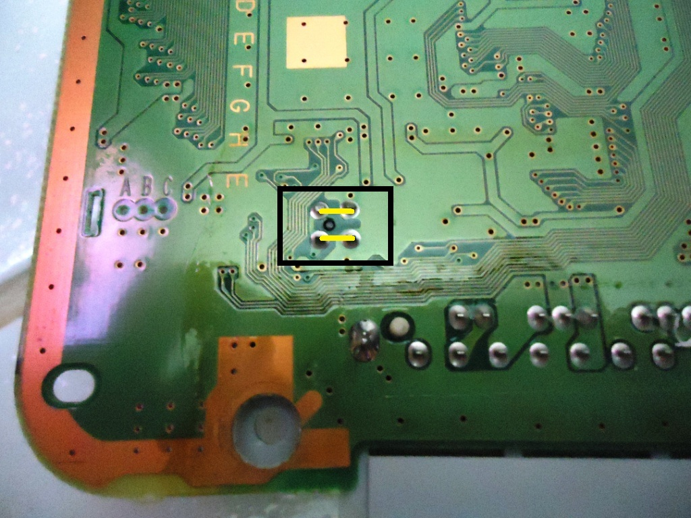

PSX - Consertando sensor da tampa do PSone
 Por
Gigacom :::. Numa troca que fiz com um amigo, acabei levando pra casa
uma porção de Psone fudidos e lascados. Aos poucos, fui
consertando um, condenando outro... numa dessas me deparei com esse um
cujo sensor da tampa do CD estava quebrado, então precisei dar
um jeito nisso. Aqui mostro 3 maneiras de se resolver esse problema. Ah
sim! Isso também serve para o PSX quadradão. Vejam!
Por
Gigacom :::. Numa troca que fiz com um amigo, acabei levando pra casa
uma porção de Psone fudidos e lascados. Aos poucos, fui
consertando um, condenando outro... numa dessas me deparei com esse um
cujo sensor da tampa do CD estava quebrado, então precisei dar
um jeito nisso. Aqui mostro 3 maneiras de se resolver esse problema. Ah
sim! Isso também serve para o PSX quadradão. Vejam!
__________________________________________________________________
Acreditem, esse PSone chegou até mim beeeem judiado. Meu amigo havia conseguido esse e mais uns outros, numas feirinhas aqui da cidade. Foram todos comprados "no estado", sujos, quebrados e mal cuidados. Como ele não estava muito a fim de trabalhar nesses consoles (pois ele tinha outros video games mais interessantes para mexer hehe) acabei pegando-os para mim.
Depois de limpar todos eles, resolvi montar um para ser o PSone oficial da minha coleção. Peguei um cuja placa mãe era uma NTSC, porém o sensor da tampa de CD estava quebrado. Só enfiando uma chave lá dentro do sensor é que fazia o PSone ler o CD, pois a ponta do sensor estava quebrada, e o pino do botão que aciona esse sensor é achatado e não adiante de nada nessa situação.
Sabendo do problema, há três modos eficientes para se resolver isso. Vamos a eles:
1 - Usando um cotoquinho de uma coisa qualquer
A idéia é simples e funciona que é uma beleza. Corte um pedacinho pequeno e fino de qualquer coisa dura e coloque em cima de onde deveria estar a pontinha do sensor. Você pode colcar esse pedacinho no sensor, porém como tudo é muito pequeno, recomendo que primeiro, encaixe o pedacinho em cima do sensor e fixe-o com fita adesiva. Assim, esse pedacinho não sairá do lugar e vai acionar o sensor sempre que preciso. Nesse exemplo, usei um caroço de arroz cru, mas você pode usar ponta de palitos, cotonetes, pedrinhas... enfim, qualquer coisa dura e pequena o bastante para substituir a ponta do sensor.
2 - Trocando o sensor
O melhor de tudo é trocar o sensor, o problema é arranjar um bom para isso. Você pode descolar esse tipo de sensor em praticamente qualquer aparelho que utilize CDs/DVDs, ou de um outro PSone morto. Nesse caso, resolvi tirar o sensor de um PSone morto para isso. Removi o sensor da placa mãe desse PSone bichado, e soldei no outro.
3 - Modo desespero on!
Quando o sensor tá bichado mesmo, e não tem outro para colocar no lugar, pode bater um desespero. Mas, há ainda esperança. Você pode soldar um fio na parte de baixo do sensor ligando os dois pontos que fazem o sinal passar e dizer ao console que a tampa está fechada. É simples, rápido de fazer, e ultra eficiente. O ruim é que em jogos que usam mais de 1 CD pode ser que atrapalhe na hora de fazer a troca, pois o console só irá ler o outro CD se for desligado.

No exemplo acima, a parte em amarelo mostra os pontos que o fio deve juntar.
Fácim né? Esse PSone como disse, já é oficial da coleção. Ele ficou com um sensor novo e tá funcionando bem que é uma beleza. Duvidas, sugestões, declarações de amor, já sabem, só postar lá no Trombone.
Acesse o Trombone e comente sobre essa matéria!


Aqui, vou apresentar a restauração de um controle de SNES que comprei em péssimo estado numa feirinha da minha cidade, e que agora está lindinho funcionando perfeitamente. Confira as dicas, e faça uma restauração você também